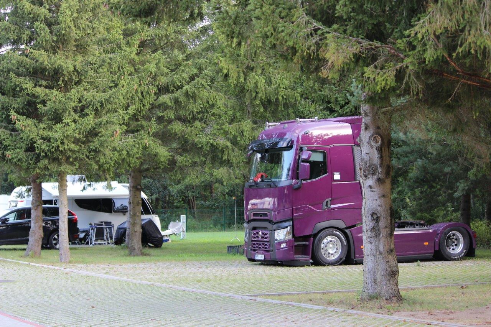

“Every month, in the Western countries of the EU, at least four carriers from Lithuania get tickets for night rest of the drivers in the truck cabins,” informed the Lithuanian Association of Road Carriers Linava. To show that sleeping in the cabin is very comfortable, the association has decided to organize an educational campaign for tourists and offer them a night in the truck cabin instead of the hotel. Its members want to show that the EU rules on the night rest of drivers are out of touch with reality. The organizers pose one simple question: if people can spend a night in the truck during their holidays, why they must not do this while at work?
We would like to draw attention to the very unfavourable regulations for professional drivers. Drivers do not want to leave their vehicles unattended and spend their night rest in the hotels. We often hear the stories that trucks left in parking lots were stolen, and not all the insurance companies pay damages if the vehicle was unattended,” said Andius Petraitis, Spokesman of Linava.
He meant the ban of taking a 45-hour rest period in the truck cabin which is applied in some EU countries. According to Petraitis, the law is very unjust and even harmful because the driver can only choose between getting a ticket and a restless night.
So, in the parking lot in Palanga, the Association parked a purple Renault Gama T truck and made it available for everyone: residents and tourists. The organizers wanted to show that modern trucks are very comfortable and that resting in them is not different than resting in the hotel. It turned out, there were a lot of people eager to spend a night in the cabin.
We did not realize that the truck is so comfortable. The driver’s cabin is spacious, the beds are comfortable, and air conditioning and a fridge protected us and our drinks from the swelter. We are sure that we would prefer a truck cabin over a rented room,” shared their impressions Dominyka Kvaraciejūtė and Giedrė Gudiškytė on the website 15min.lt.
The campaign enjoyed especially a huge interest of the truckers spending their holidays by the sea.
I spent a lot of nights in a truck cabin and I do not see anything wrong in it,” said driver Artur. “Of course, it is more comfortable in the hotel, but still it is better to save 50 euro and spend it here, by the sea.”
The driver said that the truckers from Lithuania spend only 5 percent of their nights on the road in the hotels. They usually just sleep in their trucks. Of course, risking a ticket.
The fines for sleeping in the cabin are high. They start at 500 euro and reach 30 thousand euro for sleeping regularly in the vehicle. We want to draw attention to this problem and change the law, at least in a way that drivers sleeping in their vehicles in parking lots will not be punished with fines, as is the case in the UK,” said Petraitis.